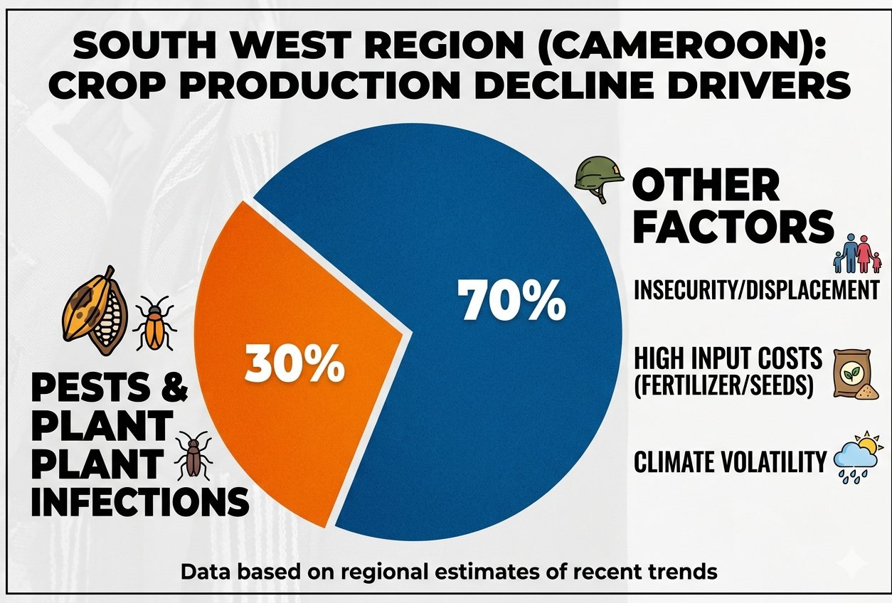
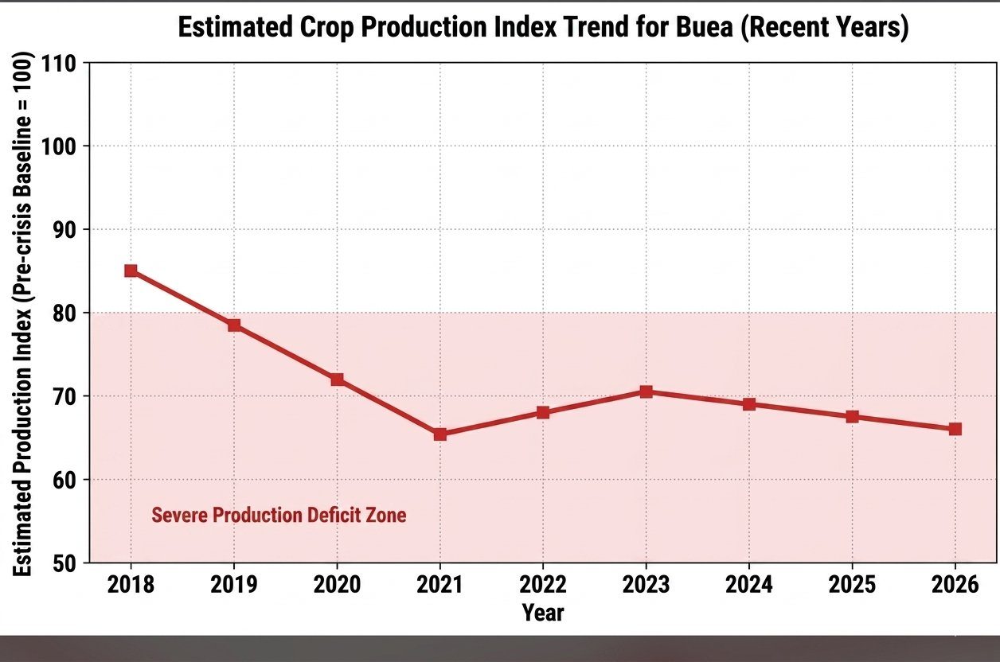
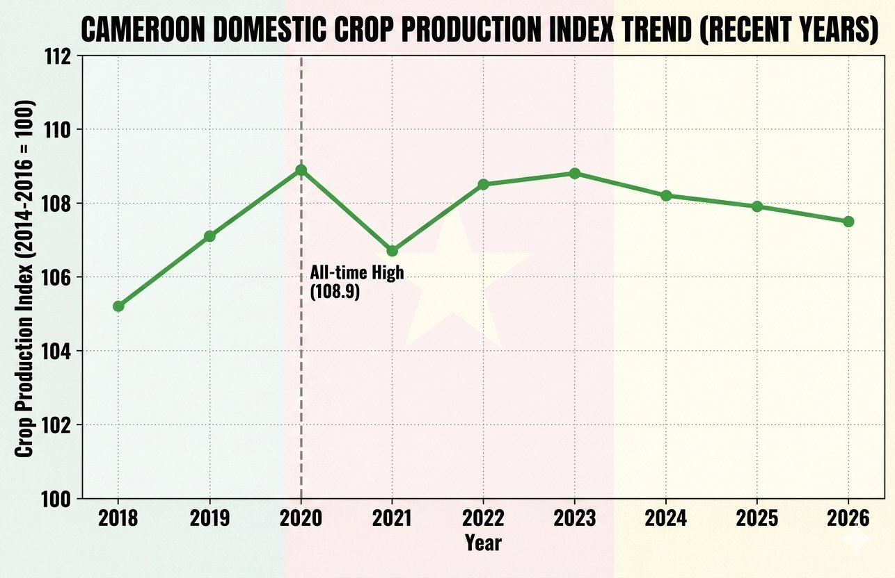

Understanding the crop crisis driving the need for AI-powered plant disease detection in Cameroon's farming communities.
Regional and national estimates based on recent agricultural trends

Pests and plant infections alone account for 30% of all crop production decline in the South West Region — a problem directly addressed by Gro's AI diagnosis tool.

Buea has been stuck in the severe production deficit zone since 2018, dropping from an index of 85 to just 66 by 2026.

While Cameroon's national index peaked at 108.9 in 2020, the South West Region lags far behind — showing a stark local crisis within national growth.
With 30% of crop decline in the South West directly caused by plant diseases and pests — and farmers lacking fast access to expert diagnosis — Gro uses AI to bridge the gap.
Free to use. No app download needed. Works on any smartphone.
Start Diagnosis Back to HomeDiseases
Accuracy
Response